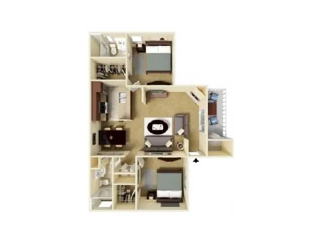
Tallbot apartment marketing floor plan tallbot-marketing-reference.jpg
source-context
Marketing floor-plan reference
Byte-exact copied marketing diagram; background apartment context, not surveyed geometry or final appliance placement.
Original unit photos and detailed module sources override schematic marketing layout; no new visual inspection.
ASSET-79E492B2F8D4
Absolute path Copy path Open original file
Provenance and exact bytes 11,838 bytes
SHA-256 d7489661bb1d596f6e7439b562e94ed4869eac0960d5fc25c9d10e0f8b43cb68
Job ID: not recorded
Recorded inspection/conversation findings or source-reference role; not a new visual inspection.
No job receipts mapped; source/reference or unmapped asset.
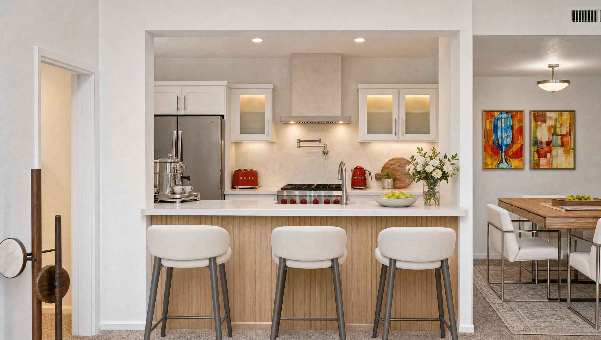
Apartment-facing kitchen — v1 apartment-v1.png
rejected
Generated still / diagram
Fridge configuration and six-knob range incorrect.
Replaced by later revisions; current design also changed.
ASSET-370E15D8FB73
Absolute path Copy path Open original file
Provenance and exact bytes 5,706,163 bytes
SHA-256 861c33d9163fc229408888be177a63b2710a4688f27e47ded769fd77ddce74f5
Job ID: a66dc7cb-a10f-46ba-ad73-5137d7704766
Recorded inspection/conversation findings or source-reference role; not a new visual inspection.
request · quote · result · stderr
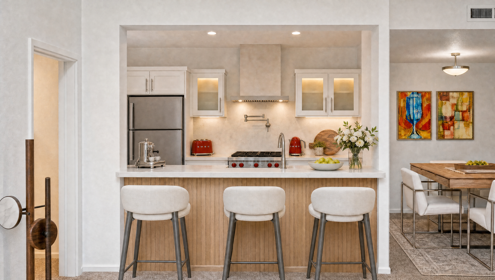
Apartment-facing kitchen — v2 apartment-v2.png
rejected
Generated still / diagram
Espresso too small and ceiling treatment conflict.
Replaced by subsequent revisions.
ASSET-245D1D1E8BCB
Absolute path Copy path Open original file
Provenance and exact bytes 6,248,927 bytes
SHA-256 dca531ee63fedf60fff3c3e2a61bf2e55aa641bf6624ea2a253e8b8067236d7a
Job ID: def80ac1-1827-47c9-ad75-d9237fc4ae11
Recorded inspection/conversation findings or source-reference role; not a new visual inspection.
request · quote · result · stderr
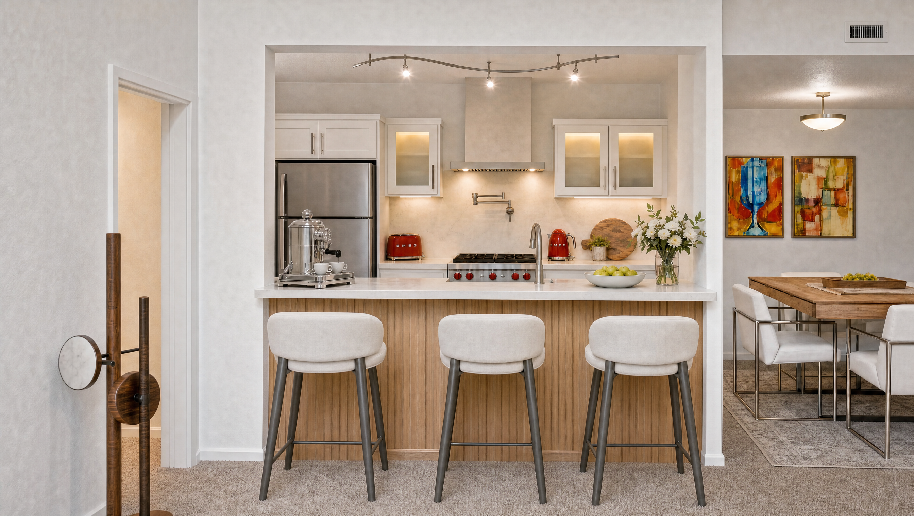
Apartment-facing kitchen — v3 apartment-v3.png
rejected
Generated still / diagram
Espresso support/placement conflict.
Replaced by subsequent revisions.
ASSET-611A193F287A
Absolute path Copy path Open original file
Provenance and exact bytes 5,871,404 bytes
SHA-256 618c9fcb47c3d2cc4736f594f737fadfec2c521eaeac2848f8d92de51b54c9a9
Job ID: dc5393d4-5245-4ad4-ae2b-4a6c007f6bce
Recorded inspection/conversation findings or source-reference role; not a new visual inspection.
request · quote · result · stderr
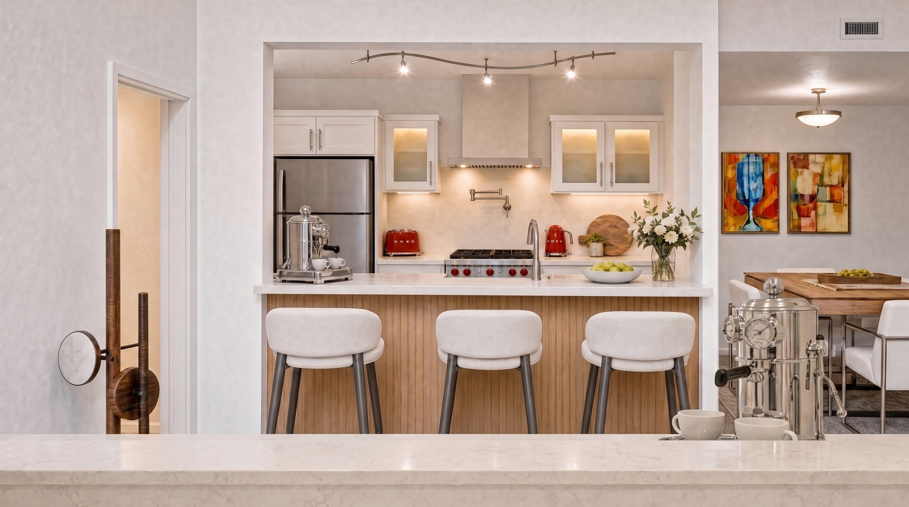
Apartment-facing kitchen — v4 apartment-v4.png
rejected
Generated still / diagram
Duplicate espresso and invented foreground counter.
Failed geometry/prop continuity.
ASSET-73788ED661C6
Absolute path Copy path Open original file
Provenance and exact bytes 7,702,038 bytes
SHA-256 2b015f3776ffaf7235f26e3b20959551238677ee1f3a40e635c442f9cde5782a
Job ID: fd80d679-e6d9-43bd-a57a-668235259731
Recorded inspection/conversation findings or source-reference role; not a new visual inspection.
request · quote · result · stderr
Apartment-facing kitchen — v5 apartment-v5.png
historical-partial
Generated still / diagram
Passed independent first-phase reference review with fine-detail uncertainty.
Floor, coffee and fridge revisions superseded it.
ASSET-C903D3108D9E
Absolute path Copy path Open original file
Provenance and exact bytes 6,050,421 bytes
SHA-256 bf21967af587cd013e389eb34d8199b4e4c60a37378031dc729f4c1b74a06d95
Job ID: 5bbba1de-da3e-48ec-a963-63ca3e35c179
Recorded inspection/conversation findings or source-reference role; not a new visual inspection.
request · quote · result · stderr
Apartment-facing kitchen — v6 apartment-v6.png
historical-partial
Generated still / diagram
Concrete/rug and removed lamp viewed; later audit found old top-freezer, cupboard and gooseneck.
Fridge/faucet wrong; replaced by v7, itself now superseded.
ASSET-F5B09CDDF0E5
Absolute path Copy path Open original file
Provenance and exact bytes 5,659,687 bytes
SHA-256 b330458b4cc7a9cddcffa9842785a85d1bfc4c1bb9f7a4c5500e22a26dd22327
Job ID: 14546811-fb00-44a8-8d40-dde6fcef081e
Recorded inspection/conversation findings or source-reference role; not a new visual inspection.
request · quote · result · stderr
Apartment-facing kitchen — v7 apartment-v7.png
historical-partial
Generated still / diagram
Independent targeted partial pass: single tall upper fridge, lower drawer, cupboard removed, L-faucet corrected. Dimensions/hinge operation unproved.
Latest refrigerator requires TWO French upper doors; not a current complete design.
ASSET-11AB53C29BE5
Absolute path Copy path Open original file
Provenance and exact bytes 5,882,010 bytes
SHA-256 2528b5aef095901f09465445398e81a2b42636b9e43dff12af382698a5674991
Job ID: 938f5ff1-6bcd-4767-8e30-039bc7ce8042
Recorded inspection/conversation findings or source-reference role; not a new visual inspection.
request · quote · result · stderr
Above-DW coffee garage — closed v1 coffee-garage-closed-v1.png
rejected
Generated still / diagram
Closed derivative of rejected countertop-box concept.
Above-DW location rejected; no mechanical proof.
ASSET-00216E25A10C
Absolute path Copy path Open original file
Provenance and exact bytes 6,484,083 bytes
SHA-256 1c9547d462baf5ee839ac3673a20708f2020bfec1e0c11c492606cccc9e08cec
Job ID: 71c881da-3503-44a1-a431-54642ca05148
Recorded inspection/conversation findings or source-reference role; not a new visual inspection.
request · quote · result · stderr
Above-DW coffee garage — closed v2 coffee-garage-closed-v2.png
rejected
Generated still / diagram
Matched tall fitted panel; closed front hid machine/tray/cups.
User rejected above-DW location; mechanism not proved.
ASSET-869668CE2424
Absolute path Copy path Open original file
Provenance and exact bytes 6,511,451 bytes
SHA-256 c2a31965f81b0698a4d424650f33e32fd40b51d7ff602b42937af8ad9d08dfb5
Job ID: 47b61c5c-84f7-4346-8d9e-57c70ba7da66
Recorded inspection/conversation findings or source-reference role; not a new visual inspection.
request · quote · result · stderr
Above-DW coffee garage — open v1 coffee-garage-open-v1.png
rejected
Generated still / diagram
Read as a standalone countertop box rather than integrated opening.
Entire above-DW location subsequently rejected.
ASSET-DDF8EAD2A05E
Absolute path Copy path Open original file
Provenance and exact bytes 6,623,319 bytes
SHA-256 f4e0265d49e1ee7a4ecbac5e721e99b7f4f5e8e8d662f8398da868d2fa53259c
Job ID: fbb722db-9701-45d4-ae84-4172ac40b3a7
Recorded inspection/conversation findings or source-reference role; not a new visual inspection.
request · quote · result · stderr
Above-DW coffee garage — open v2 coffee-garage-open-v2.png
rejected
Generated still / diagram
Improved integrated tall panel and tray visual concept above DW.
User rejected above-DW location and counter consumption.
ASSET-18B174C12529
Absolute path Copy path Open original file
Provenance and exact bytes 6,639,776 bytes
SHA-256 33c3738c191eb3a48224fa292f9ad2399d737cdb02753d578e4089f031124bd3
Job ID: 5acbcaab-860d-4bc4-81d3-9594a42a892a
Recorded inspection/conversation findings or source-reference role; not a new visual inspection.
request · quote · result · stderr
Rejected end-wall tower — closed v1 end-wall-closed-v1.png
rejected
Generated still / diagram
Wrong full-height side cupboard and miniature wine fridge.
Projecting wall-unit scheme later rejected entirely.
ASSET-856C718653B5
Absolute path Copy path Open original file
Provenance and exact bytes 5,873,080 bytes
SHA-256 97eb2bf128f2c3229fd82981e2b37ddd0144abef796a35889bc3bbd7a3728717
Job ID: fce5b153-635f-456c-bf0d-7dd295cfcc77
Recorded inspection/conversation findings or source-reference role; not a new visual inspection.
request · quote · result · stderr
Rejected end-wall tower — closed v2 end-wall-closed-v2.png
rejected
Generated still / diagram
Then-current visual pass after wine-size correction.
User rejected projecting tower, Italy art and merged spice/coffee location.
ASSET-84E188E21D8D
Absolute path Copy path Open original file
Provenance and exact bytes 5,917,447 bytes
SHA-256 a1d71a51b4ad91edb92d0ab1385cd71c6fa7460a2970ae53c03d834eb3862d58
Job ID: f1163e05-5394-41ff-989d-cdecd9f6f016
Recorded inspection/conversation findings or source-reference role; not a new visual inspection.
request · quote · result · stderr
Flush wine front and closed coffee panel — v1 end-wall-flush-v1.png
historical-partial
Generated still / diagram
Independent visual-intent pass: flush wine front and closed white coffee panel; no tower/poster/tech.
REF-K replaces blank panel with open lit niche/glass storage; single-door fridge superseded.
ASSET-B0EB85ECB7DF
Absolute path Copy path Open original file
Provenance and exact bytes 6,078,854 bytes
SHA-256 981f1b452a2544a76118217f9135d8d25b8b456b77e2c8ea8ca0bee8734e1bd3
Job ID: 8eea5a88-2173-45e7-bbec-1190270ecb03
Recorded inspection/conversation findings or source-reference role; not a new visual inspection.
request · quote · result · stderr
Rejected end-wall tower — open v1 end-wall-open-v1.png
rejected
Generated still / diagram
Matching partial coffee reveal; not full operating extension.
Projecting tower, Italy art and merged locations rejected.
ASSET-91B2F07C616D
Absolute path Copy path Open original file
Provenance and exact bytes 6,049,727 bytes
SHA-256 e33d52355353be9f363f0eea67259eadf061bf1459aadb0efd4844233d521d0e
Job ID: b0d3ea52-543f-426b-90fd-9bf754e14a18
Recorded inspection/conversation findings or source-reference role; not a new visual inspection.
request · quote · result · stderr
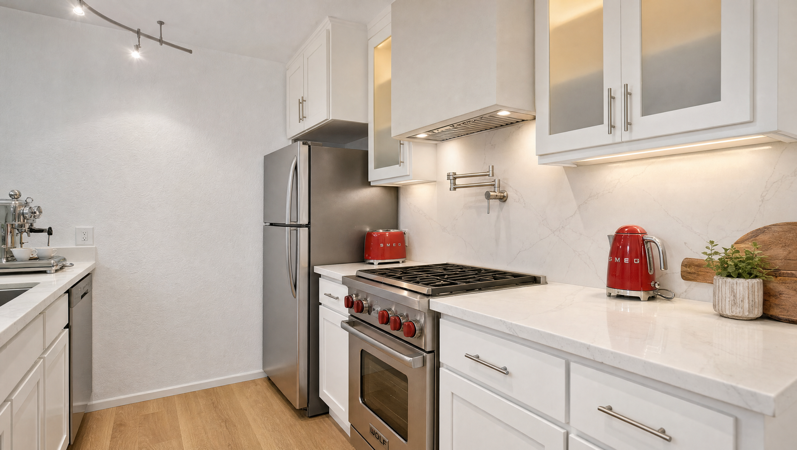
Cooking/fridge wall — v1 master-v1.png
rejected
Generated still / diagram
Upper cabinets incorrectly extend to ceiling; required 84–96 inch gap absent.
Cabinet geometry failed; later finish/fridge changes supersede it.
ASSET-051125985B79
Absolute path Copy path Open original file
Provenance and exact bytes 5,167,734 bytes
SHA-256 40cba925fe743034f6f7cee71c4af56485a156da6c2b7f8f81cd5d696ea577e7
Job ID: 9e09d477-5310-4c27-b017-5728c1b2a46f
Recorded inspection/conversation findings or source-reference role; not a new visual inspection.
request · quote · result · stderr
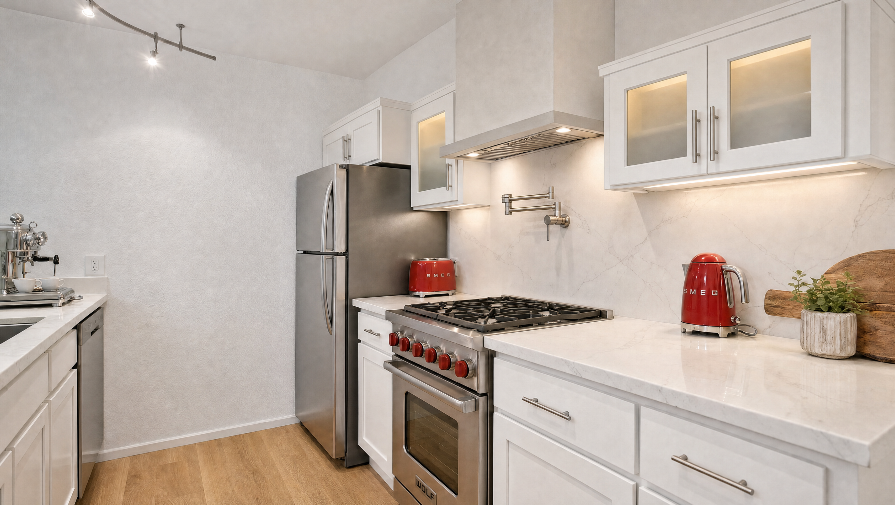
Cooking/fridge wall — v2 master-v2.png
rejected
Generated still / diagram
Cabinet gap restored but range has six knobs, inconsistent with Wolf reference.
Wolf control mismatch; later design revisions.
ASSET-9B775355C694
Absolute path Copy path Open original file
Provenance and exact bytes 5,659,957 bytes
SHA-256 239239b0892818dad7499f11b4add25ad8c941468be4b65df7ba41ea94f425aa
Job ID: cd5c083b-1fb4-41b1-861b-f4bf8f766dcf
Recorded inspection/conversation findings or source-reference role; not a new visual inspection.
request · quote · result · stderr
Cooking/fridge wall — v3 master-v3.png
historical-partial
Generated still / diagram
Gap and five-red-knob Wolf layout corrected; provisional first-phase visual reference.
Concrete, coffee and French-door revisions supersede final-design use.
ASSET-98B1DDE6685F
Absolute path Copy path Open original file
Provenance and exact bytes 6,149,664 bytes
SHA-256 63841aeff37d18a42130fa2b8751e5aa09ddf40f2c35b88db2f3074b83ce2cda
Job ID: 9a57a3fa-4ce8-4cea-99e9-5e023ed85c52
Recorded inspection/conversation findings or source-reference role; not a new visual inspection.
request · quote · result · stderr
Cooking/fridge wall — v4 master-v4.png
historical-partial
Generated still / diagram
Concrete revision viewed; later audit found old top-freezer and over-fridge cupboard.
Current French-door configuration not shown.
ASSET-4717F8F44B17
Absolute path Copy path Open original file
Provenance and exact bytes 5,927,955 bytes
SHA-256 619b35a93cffccc16699ac89f0e7a5f472b5892daa647933bfdcda00a49d6a3a
Job ID: 252a3e33-ccaa-4e02-a499-971553af16a9
Recorded inspection/conversation findings or source-reference role; not a new visual inspection.
request · quote · result · stderr
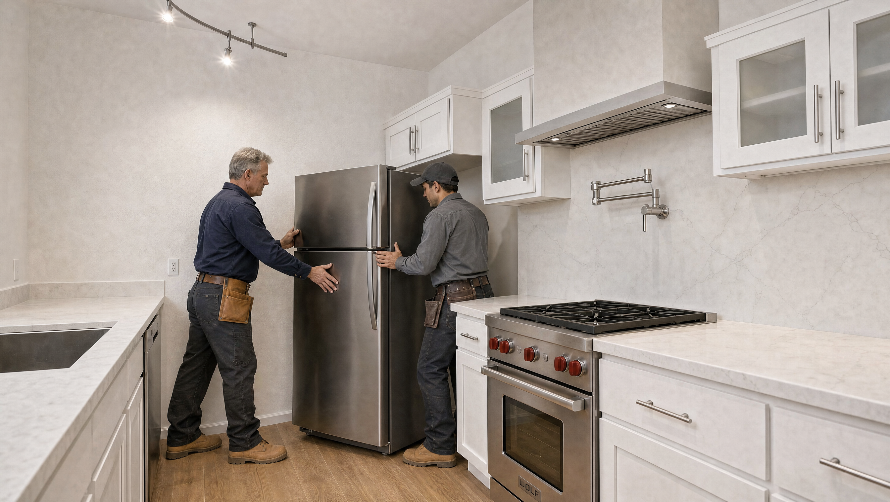
Fridge-placement pilot starting frame — v1 pilot-fridge-start-v1.png
rejected
Generated still / diagram
Conversation-derived review: visually inspected and rejected because refrigerator handles were on the wrong side.
Replaced by start-v2; not a production source.
ASSET-20A12A705EC8
Absolute path Copy path Open original file
Provenance and exact bytes 5,934,832 bytes
SHA-256 0c5a4c31ea92f544483441c4e6557a10826d8b92017e25e7715368b986f2fb5a
Job ID: 1f1eef81-cdd7-4277-a859-2b0cdcf5682d
Conversation-derived visual review provided by production lead; supplements omissions in outputs/inspection.txt.
request · quote · result · stderr
Fridge-placement pilot starting frame — v2 pilot-fridge-start-v2.png
historical-pilot-source
Generated still / diagram
Conversation-derived review: handles moved left; visually inspected and used for the isolated fridge motion test.
Not production-approved; later French-door design supersedes prior fridge appearance.
ASSET-D11FC156C222
Absolute path Copy path Open original file
Provenance and exact bytes 5,991,413 bytes
SHA-256 0684e12f95d31caac8a13e03939d47abbd7807ad663c29fb4b45178ff6e35237
Job ID: 671c5eba-d20b-4c07-bf42-d6a0e4da75f7
Conversation-derived visual review provided by production lead; supplements omissions in outputs/inspection.txt.
request · quote · result · stderr
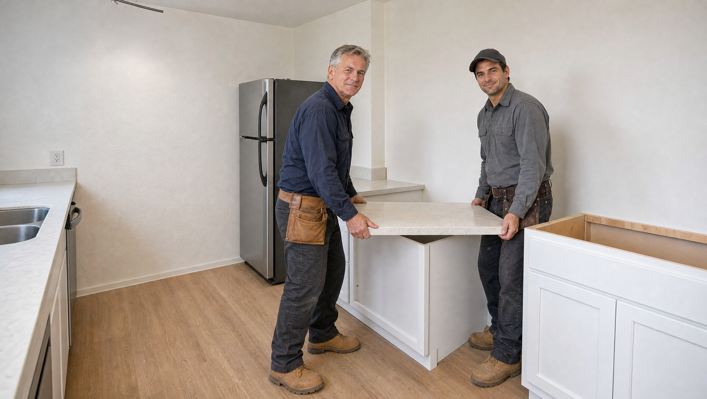
Quartz-seating pilot starting frame — v1 pilot-quartz-start-v1.png
rejected
Generated still / diagram
Invented central cabinet and camera-facing pose.
Replaced by start-v2.
ASSET-7E1091B65874
Absolute path Copy path Open original file
Provenance and exact bytes 5,747,063 bytes
SHA-256 5000acadbca2cd0d30c61f00c6ea5cb86dfdbcba8406ba76134bdf6e957e7c02
Job ID: 9a2fcc43-df3f-4626-be21-d8f6f904f33e
Recorded inspection/conversation findings or source-reference role; not a new visual inspection.
request · quote · result · stderr
Quartz-seating pilot starting frame — v2 pilot-quartz-start-v2.png
historical-pilot-source
Generated still / diagram
Action moved to cooking-wall base; inspected isolated motion source.
Early sink counter and quartz finish prevent production Shot03 acceptance; later finishes changed.
ASSET-6B769B488544
Absolute path Copy path Open original file
Provenance and exact bytes 5,943,422 bytes
SHA-256 0afcbfac3160c8283c5b0f9b0e147c12f17606bc7e64ba9abf51c02be51f671c
Job ID: e8324325-a21c-4ebc-af8f-f48be553e4fb
Recorded inspection/conversation findings or source-reference role; not a new visual inspection.
request · quote · result · stderr
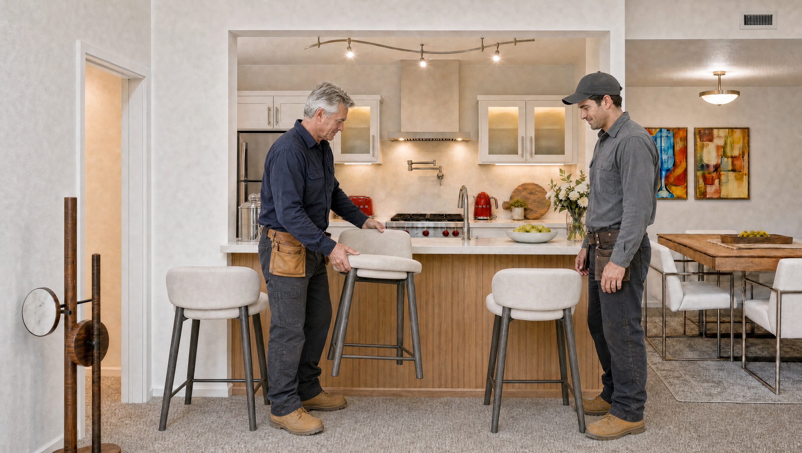
Stool-placement pilot starting frame — v1 pilot-stool-start-v1.png
historical-pilot-source
Generated still / diagram
Conversation-derived review: visually inspected two parked stools and one held stool with workers; used for isolated placement test.
Not final accepted; resulting pilot failed center-stool orientation; design subsequently changed.
ASSET-3C3E2FE5F029
Absolute path Copy path Open original file
Provenance and exact bytes 6,222,753 bytes
SHA-256 a30a2b3d7c1061147e443b7506a277910a143edfd295156d7234caa206dd09fe
Job ID: ed06fc44-37c5-40e5-bb53-1de82fe274da
Conversation-derived visual review provided by production lead; supplements omissions in outputs/inspection.txt.
request · quote · result · stderr
Sink-side kitchen — v1 sink-v1.png
historical-partial
Generated still / diagram
Topology/floor boundary passed then-current visual review; exact espresso/cup details uncertain.
Old floor and ornate/exposed coffee design superseded.
ASSET-E90910197BCC
Absolute path Copy path Open original file
Provenance and exact bytes 5,565,651 bytes
SHA-256 db8a16a4e93c125c920f7624d5c133f04d4f79cb71fd0e9691e1fe8a8ee2ee4c
Job ID: ad4942e9-2a3a-404b-a6cc-a1f90a696885
Recorded inspection/conversation findings or source-reference role; not a new visual inspection.
request · quote · result · stderr
Sink-side kitchen — v2 sink-v2.png
historical-partial
Generated still / diagram
Concrete and sleek exposed machine above DW viewed.
Above-DW coffee placement rejected.
ASSET-EF2096817A2B
Absolute path Copy path Open original file
Provenance and exact bytes 5,958,494 bytes
SHA-256 11593739de176c207eb1d5aaa9d98ab8d1a08751c7e906ba28ce9d939febbe97
Job ID: cbd5b297-e8d9-46c0-bc6e-b7d406b5a4c0
Recorded inspection/conversation findings or source-reference role; not a new visual inspection.
request · quote · result · stderr
Sink-side nook/microwave — v3 concept sink-v3-concept.png
component-reference
Generated still / diagram
Microwave left of single basin, L-faucet and separate spice/tech nook visually reviewed; exposed espresso above DW remains.
Exposed coffee placement rejected; use only relevant components.
ASSET-DA25C5681553
Absolute path Copy path Open original file
Provenance and exact bytes 6,194,513 bytes
SHA-256 2dfd001d041444be7a06c9bc9b8b8e3f65c696fcc94de8d48eaed3335fec3774
Job ID: 227c016a-5bf7-49b3-866b-1429d9e1ef5d
Recorded inspection/conversation findings or source-reference role; not a new visual inspection.
request · quote · result · stderr
Sink-side kitchen — v4 sink-v4.png
component-reference
Generated still / diagram
Nano Banana Pro cleanup removed espresso/cups above DW; clear counter, microwave, L-faucet and nook viewed by production lead.
Not reconciled with latest REF-K/French-door complete design.
ASSET-58218ED49CF8
Absolute path Copy path Open original file
Provenance and exact bytes 5,731,975 bytes
SHA-256 d7faab2ce12367e6d48f7fe2fab82620b5c888c436a13ced8f1ba8348eface2d
Job ID: 4790db6d-6291-467c-bc05-4dde03fbe945
Recorded inspection/conversation findings or source-reference role; not a new visual inspection.
request · quote · result · stderr
Two-worker identity sheet — v1 workers-v1.png
identity-reference
Generated still / diagram
Two differentiated full-body workers with prescribed clothing/boots; accepted for earlier pilot identity only.
No claim of final-design or completed-film approval.
ASSET-6A04401FE294
Absolute path Copy path Open original file
Provenance and exact bytes 4,878,251 bytes
SHA-256 85030e1692e35fb8d075bbf08d03789c45f2be67178e785756cc0d5826f78dd9
Job ID: cd0a7918-5ce8-4add-b7a3-6f39e0f6e9e6
Recorded inspection/conversation findings or source-reference role; not a new visual inspection.
request · quote · result · stderr
Fridge-placement — v1 6-fps contact sheet fridge-v1-6fps.jpg
historical-pilot-partial
6-fps contact sheet
6-fps contacts/endpoint suggest controlled placement; partner occludes endpoint. Candidate motion pass only.
Not production acceptance; current French-door design supersedes appearance.
ASSET-33F222DCAB3F
Absolute path Copy path Open original file
Provenance and exact bytes 201,854 bytes
SHA-256 fd72479bab7a374c9b62263a51f63448d1ede43e76398678348e8cc553050462
Job ID: 12bf1a26-2268-43aa-9f68-02f6c120a622
Recorded inspection/conversation findings or source-reference role; not a new visual inspection.
request · quote · result · stderr
Fridge-placement — v1 ending frame fridge-v1-end.png
historical-pilot-partial
Endpoint frame
6-fps contacts/endpoint suggest controlled placement; partner occludes endpoint. Candidate motion pass only.
Not production acceptance; current French-door design supersedes appearance.
ASSET-01ED69DAEB23
Absolute path Copy path Open original file
Provenance and exact bytes 1,874,720 bytes
SHA-256 6bb1e0a5de904c994bd9f1877efcdcb42514fb59df3e025a3b632e866ebd9e04
Job ID: 12bf1a26-2268-43aa-9f68-02f6c120a622
Recorded inspection/conversation findings or source-reference role; not a new visual inspection.
request · quote · result · stderr
Quartz-seating — v1 6-fps contact sheet quartz-v1-6fps.jpg
failed-pilot
6-fps contact sheet
6-fps contacts/full-size endpoint: released misaligned slab; cabinet opening exposed near 4.8–5.04s.
Not production Shot03; earlier design; no every-frame/playback claim.
ASSET-FDDEE504DB5F
Absolute path Copy path Open original file
Provenance and exact bytes 176,631 bytes
SHA-256 d8c735d67cbdc5639722acc4a80eb8805b6380b5a5bcd65ac095653e92787629
Job ID: c2cc66b4-02cd-445e-8454-2606fe2ee7ee
Recorded inspection/conversation findings or source-reference role; not a new visual inspection.
request · quote · result · stderr
Quartz-seating — v1 ending frame quartz-v1-end.png
failed-pilot
Endpoint frame
6-fps contacts/full-size endpoint: released misaligned slab; cabinet opening exposed near 4.8–5.04s.
Not production Shot03; earlier design; no every-frame/playback claim.
ASSET-A47D0711B4DC
Absolute path Copy path Open original file
Provenance and exact bytes 1,789,443 bytes
SHA-256 2b8df1cb427329ac8bdb8eb5b6d6f7a13c9c6c0158f88ec769bcfff6d05734d0
Job ID: c2cc66b4-02cd-445e-8454-2606fe2ee7ee
Recorded inspection/conversation findings or source-reference role; not a new visual inspection.
request · quote · result · stderr
Stool-placement — v1 6-fps contact sheet stool-v1-6fps.jpg
failed-pilot
6-fps contact sheet
Center stool ends facing away from bar. Shrinkage suspicion NOT confirmed.
Orientation failed; earlier finish revision; no every-frame/playback claim.
ASSET-03F811B809FD
Absolute path Copy path Open original file
Provenance and exact bytes 249,798 bytes
SHA-256 698d6d23ebb09685b393e27e5717e97ab3c5f4cf12a7ea72f23e5b9559845018
Job ID: 2feb654c-1fc9-4d33-b969-f3079570df93
Recorded inspection/conversation findings or source-reference role; not a new visual inspection.
request · quote · result · stderr
Stool-placement — v1 ending frame stool-v1-end.png
failed-pilot
Endpoint frame
Center stool ends facing away from bar. Shrinkage suspicion NOT confirmed.
Orientation failed; earlier finish revision; no every-frame/playback claim.
ASSET-C0682677BF3C
Absolute path Copy path Open original file
Provenance and exact bytes 2,150,622 bytes
SHA-256 5f5ea17a522a8bacefce2a2c13fc668a5254ff99c741d489d73e2bcba352883e
Job ID: 2feb654c-1fc9-4d33-b969-f3079570df93
Recorded inspection/conversation findings or source-reference role; not a new visual inspection.
request · quote · result · stderr
Rejected projecting end-wall layout — diagram end-wall-proposed.png
rejected-diagram
Generated still / diagram
Nominal projecting wine-base/combined upper concept diagram, including revised microwave coordinate.
User rejected projecting scheme; original diagrams remain separate geometry sources.
ASSET-B5CF2294EA3A
Absolute path Copy path Open original file
Provenance and exact bytes 133,486 bytes
SHA-256 ceac3114377d677765bd2b0f2e63254b31e0d9efe8496640947272e8e095d51a
Job ID: not recorded
Recorded inspection/conversation findings or source-reference role; not a new visual inspection.
No job receipts mapped; source/reference or unmapped asset.
White Shaker cabinetry and stone — REF-E ref-e-cabinetry.webp
component-reference
Appearance reference
White Shaker cabinetry, frosted inserts and veined stone appearance.
Original room geometry and latest brief control; conflicting source appliances/floors/room size are not adopted.
ASSET-C895B2CEF099
Absolute path Copy path Open original file
Provenance and exact bytes 36,788 bytes
SHA-256 147ac1196c68dac4022bf2e258731550ceb4b6b31958b548c00a1b5e4296ad18
Job ID: not recorded
Recorded inspection/conversation findings or source-reference role; not a new visual inspection.
No job receipts mapped; source/reference or unmapped asset.
Pale hood and pot filler — REF-F ref-f-cooking-zone.webp
component-reference
Appearance reference
Pale box/chimney hood, brushed pot filler and cooking-wall material.
Original room geometry and latest brief control; conflicting source appliances/floors/room size are not adopted.
ASSET-284CBAFF3DE4
Absolute path Copy path Open original file
Provenance and exact bytes 54,680 bytes
SHA-256 301985a19868c27704dfc4633308e4e80b45c210d09eb9687cb890030f1a8894
Job ID: not recorded
Recorded inspection/conversation findings or source-reference role; not a new visual inspection.
No job receipts mapped; source/reference or unmapped asset.
Material palette — REF-G ref-g-full-room.webp
component-reference
Appearance reference
Overall material character only; its floor is superseded by concrete and ceiling must preserve established source continuity.
Original room geometry and latest brief control; conflicting source appliances/floors/room size are not adopted.
ASSET-C76316FF3ACA
Absolute path Copy path Open original file
Provenance and exact bytes 78,612 bytes
SHA-256 da331eba04c416af5b611945fe4082c38653ce855e5e4872ba17e0507d407c5f
Job ID: not recorded
Recorded inspection/conversation findings or source-reference role; not a new visual inspection.
No job receipts mapped; source/reference or unmapped asset.
Finished apartment-facing inspiration — REF-H-DESIGN ref-h-finished-apartment-facing.png
component-reference
Appearance reference
User-supplied apartment-facing appearance/composition intent only; its electric cooktop and undercabinet hood are not adopted.
Original room geometry and latest brief control; conflicting source appliances/floors/room size are not adopted.
ASSET-07790F8805CB
Absolute path Copy path Open original file
Provenance and exact bytes 706,740 bytes
SHA-256 57c5c0a80f4499694dc652fbe6a6dc103ab475789f30f72aa5d0a391f8707ee3
Job ID: not recorded
Recorded inspection/conversation findings or source-reference role; not a new visual inspection.
No job receipts mapped; source/reference or unmapped asset.
Built-in microwave beside sink — REF-J ref-j-sink-microwave.png
component-reference
Microwave component reference
Sink-side built-in microwave left of sink only; do not copy double basin, old faucet or floor.
Does not define complete final kitchen.
ASSET-28BE042944A8
Absolute path Copy path Open original file
Provenance and exact bytes 4,159,720 bytes
SHA-256 712b0de3e0b4a5b3cc5df8a2b4b99dbbbf4003caa7f38aa781cf1dfbf17a82da
Job ID: not recorded
Recorded inspection/conversation findings or source-reference role; not a new visual inspection.
No job receipts mapped; source/reference or unmapped asset.
Integrated lit coffee/wine bank — REF-K ref-k-integrated-coffee-wine.png
current-user-reference
Latest user appearance reference
REF-K: integrated recessed coffee/wine bank, lit glass storage/prep alcove, small espresso. Its own single-door fridge is NOT adopted.
Current request requires French upper door pair; exact model/fit pending.
ASSET-F8BBE0166B9A
Absolute path Copy path Open original file
Provenance and exact bytes 683,846 bytes
SHA-256 ae2ec4d50cf67472a4a55ca2aa0d925092e0493b66c0c110fb2774810f04bfc4
Job ID: not recorded
Recorded inspection/conversation findings or source-reference role; not a new visual inspection.
No job receipts mapped; source/reference or unmapped asset.
Original kitchen — cooking/fridge wall ref-a-cooking-run.webp
source-geometry
Original BEFORE geometry plate
Master cooking-run camera, refrigerator corner and wall planes. BEFORE plate governs topology/camera, not final appliance or finish design.
Historical BEFORE appearance must not override final choices.
ASSET-C0BB67BE6089
Absolute path Copy path Open original file
Provenance and exact bytes 87,208 bytes
SHA-256 c865abe741dd2e6dfaaca0395fd0e0a198babdaefed02346e16d454f12e883cf
Job ID: not recorded
Recorded inspection/conversation findings or source-reference role; not a new visual inspection.
No job receipts mapped; source/reference or unmapped asset.
Original kitchen — sink run ref-b-sink-run.webp
source-geometry
Original BEFORE geometry plate
Sink-run camera, sink/DW, raised ledge, opening and apartment beyond. BEFORE plate governs topology/camera, not final appliance or finish design.
Historical BEFORE appearance must not override final choices.
ASSET-8FD285BFE279
Absolute path Copy path Open original file
Provenance and exact bytes 82,277 bytes
SHA-256 5777ff24f9d682eb61e819b47231d5c1827810ab2add6e55d7114ba0ca58fe09
Job ID: not recorded
Recorded inspection/conversation findings or source-reference role; not a new visual inspection.
No job receipts mapped; source/reference or unmapped asset.
Original sink run — duplicate REF-B ref-c-wider-sink-run.webp
source-geometry
Original BEFORE geometry plate
Original BEFORE photograph; no individual new visual inspection claimed. BEFORE plate governs topology/camera, not final appliance or finish design. Duplicate of REF-B; no new viewpoint.
Historical BEFORE appearance must not override final choices.
ASSET-75E57CFAE53B
Absolute path Copy path Open original file
Provenance and exact bytes 82,277 bytes
SHA-256 5777ff24f9d682eb61e819b47231d5c1827810ab2add6e55d7114ba0ca58fe09
Job ID: not recorded
Recorded inspection/conversation findings or source-reference role; not a new visual inspection.
No job receipts mapped; source/reference or unmapped asset.
Original cooking wall — duplicate REF-A ref-d-end-wall-closeup.webp
source-geometry
Original BEFORE geometry plate
Original BEFORE photograph; no individual new visual inspection claimed. BEFORE plate governs topology/camera, not final appliance or finish design. Duplicate of REF-A; no new viewpoint.
Historical BEFORE appearance must not override final choices.
ASSET-18D078B4E450
Absolute path Copy path Open original file
Provenance and exact bytes 87,208 bytes
SHA-256 c865abe741dd2e6dfaaca0395fd0e0a198babdaefed02346e16d454f12e883cf
Job ID: not recorded
Recorded inspection/conversation findings or source-reference role; not a new visual inspection.
No job receipts mapped; source/reference or unmapped asset.
Original apartment-facing kitchen — photo 02 ref-h-apartment-facing.webp
source-geometry
Original BEFORE geometry plate
Original photo-02, living-room-to-kitchen opening, bar and dining adjacency. BEFORE plate governs topology/camera, not final appliance or finish design.
Historical BEFORE appearance must not override final choices.
ASSET-A35944133B3C
Absolute path Copy path Open original file
Provenance and exact bytes 75,664 bytes
SHA-256 cf4b6aecb4fa78a0033ad6dd1d3f494ae3c5b78d6cc3f799e565ffceec2475dc
Job ID: not recorded
Recorded inspection/conversation findings or source-reference role; not a new visual inspection.
No job receipts mapped; source/reference or unmapped asset.
Original empty kitchen/living junction — photo 26 ref-i-empty-kitchen-living.webp
source-geometry
Original BEFORE geometry plate
Original photo-26, empty kitchen/living junction, old carpet/tile boundary and wall planes. BEFORE plate governs topology/camera, not final appliance or finish design.
Historical BEFORE appearance must not override final choices.
ASSET-366001E6E7E7
Absolute path Copy path Open original file
Provenance and exact bytes 72,400 bytes
SHA-256 fdad7b95a79161f0aa304ed60a0ff0ef339cff35dbe65cf92aa1db3da7da8fcc
Job ID: not recorded
Recorded inspection/conversation findings or source-reference role; not a new visual inspection.
No job receipts mapped; source/reference or unmapped asset.
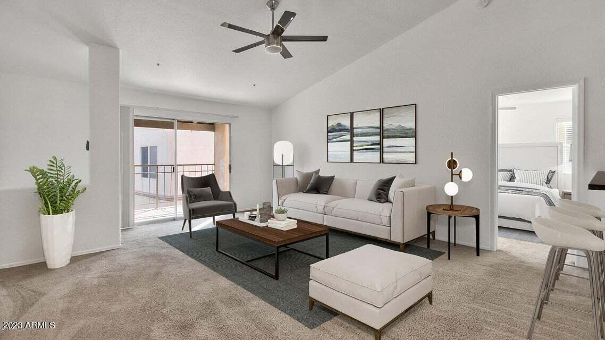
Original unit 2130 photograph — 03 unit2130-photo-03.webp
source-geometry
Original BEFORE geometry plate
Original BEFORE photograph; no individual new visual inspection claimed. BEFORE plate governs topology/camera, not final appliance or finish design.
Historical BEFORE appearance must not override final choices.
ASSET-6F884E154086
Absolute path Copy path Open original file
Provenance and exact bytes 88,925 bytes
SHA-256 8e312af945fdee2815c1e259710fae632ea3249a04cb3c8041cac0f345621b50
Job ID: not recorded
Recorded inspection/conversation findings or source-reference role; not a new visual inspection.
No job receipts mapped; source/reference or unmapped asset.
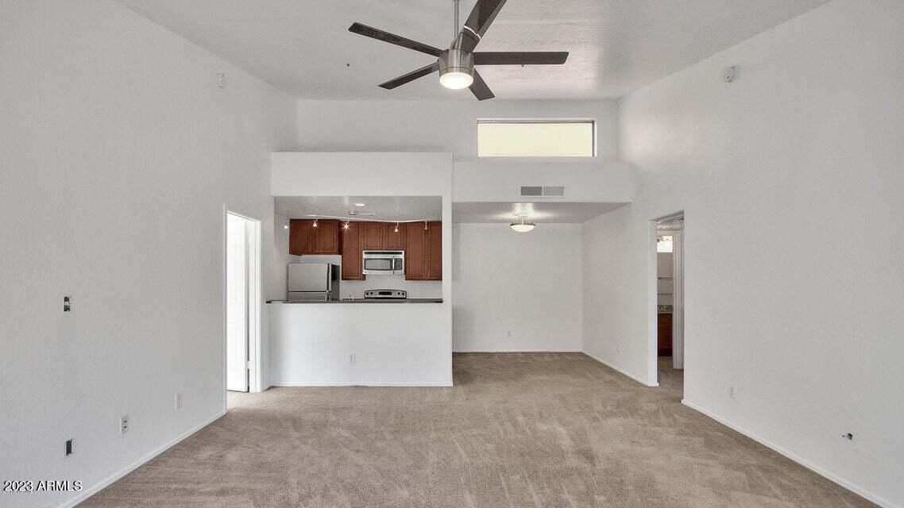
Original unit 2130 photograph — 24 unit2130-photo-24.webp
source-geometry
Original BEFORE geometry plate
Original BEFORE photograph; no individual new visual inspection claimed. BEFORE plate governs topology/camera, not final appliance or finish design.
Historical BEFORE appearance must not override final choices.
ASSET-5F6D596587EA
Absolute path Copy path Open original file
Provenance and exact bytes 55,974 bytes
SHA-256 c841964f5cb3759728e5db5ce816e63c458730c96d03c9f7d0be484d425658e5
Job ID: not recorded
Recorded inspection/conversation findings or source-reference role; not a new visual inspection.
No job receipts mapped; source/reference or unmapped asset.
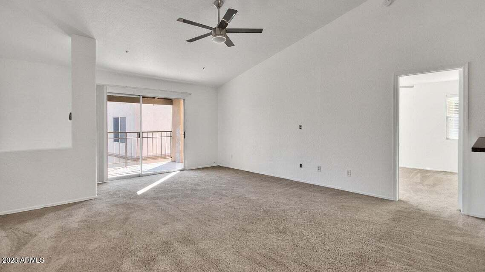
Original unit 2130 photograph — 25 unit2130-photo-25.webp
source-geometry
Original BEFORE geometry plate
Original BEFORE photograph; no individual new visual inspection claimed. BEFORE plate governs topology/camera, not final appliance or finish design.
Historical BEFORE appearance must not override final choices.
ASSET-0064973C92C4
Absolute path Copy path Open original file
Provenance and exact bytes 76,364 bytes
SHA-256 315ab8464b235b7a6a2566c1a6dbc811d434907093e00ac460960dc3c3bf3d92
Job ID: not recorded
Recorded inspection/conversation findings or source-reference role; not a new visual inspection.
No job receipts mapped; source/reference or unmapped asset.
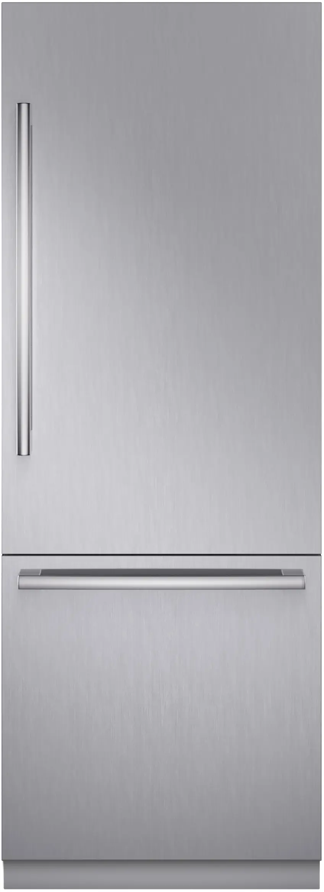
Superseded single-door Bosch fridge — product reference bosch-b30bb130ss-front.webp
superseded-product
Superseded fridge product reference
Bosch single-door product reference; previously used for tall door/lower drawer.
French-door revision supersedes model, single door and model-based 84-inch opening.
ASSET-47911696B304
Absolute path Copy path Open original file
Provenance and exact bytes 14,642 bytes
SHA-256 058dafa16d3614af2ecccb3fad2b4525cdb61ee5b0540ab7db5a9ae5d30e6a25
Job ID: not recorded
Recorded inspection/conversation findings or source-reference role; not a new visual inspection.
No job receipts mapped; source/reference or unmapped asset.
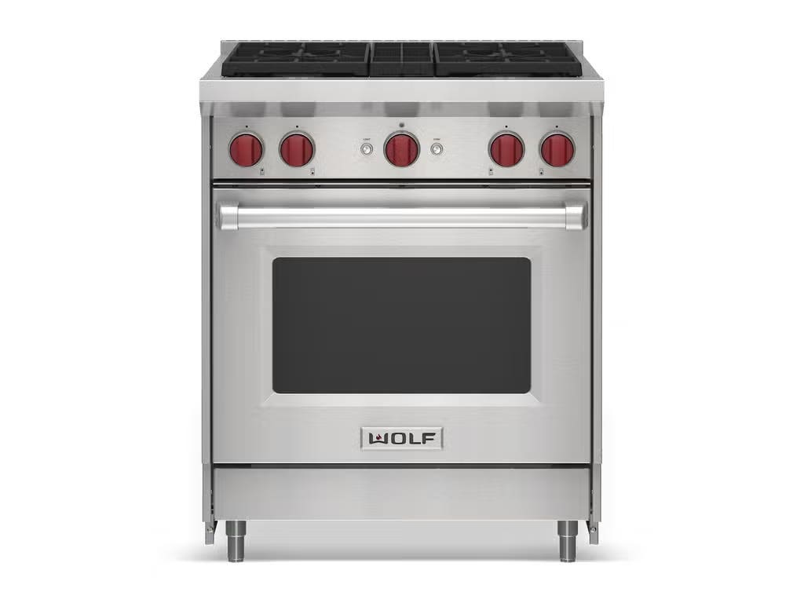
Wolf GR304 gas range — product reference wolf-gr304.jpg
current-product-reference
Wolf range product reference
Wolf GR304 reference for range appearance/control layout.
Reference image is not installed-fit or whole-design approval.
ASSET-26F3E0139C7A
Absolute path Copy path Open original file
Provenance and exact bytes 30,964 bytes
SHA-256 70e2f77bd06dbcaa871e6a4be9022b538c018a8aba7d2febeabf11a687f9e258
Job ID: not recorded
Recorded inspection/conversation findings or source-reference role; not a new visual inspection.
No job receipts mapped; source/reference or unmapped asset.